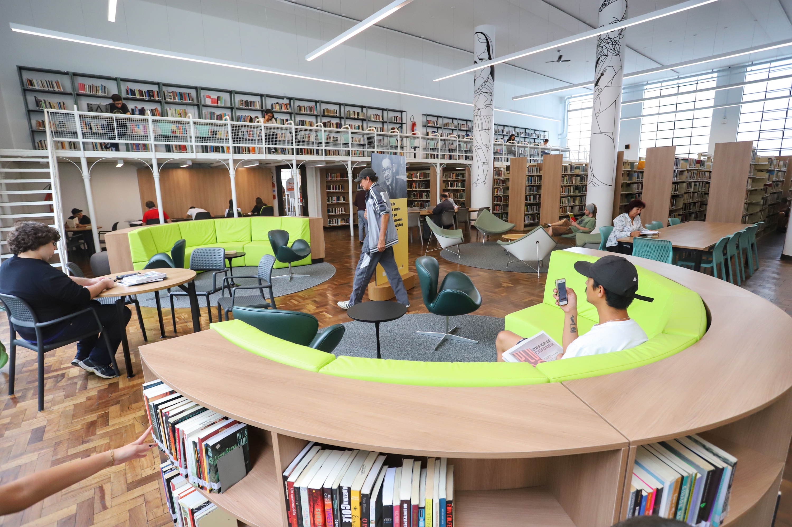

As unidades

Unidade 1
Localizada no campus principal, a Unidade 1 oferece salas de estudo, computadores e um acervo especializado em obras acadêmicas.
Unidade 2
Com atendimento estendido, esta unidade conta com recursos multimídia e espaço de pesquisa voltado para estudantes de pós-graduação.
Unidade 3
Espaço moderno e acolhedor pensado para estudos em grupo, oficinas e eventos acadêmicos, com suporte técnico e bibliotecário.